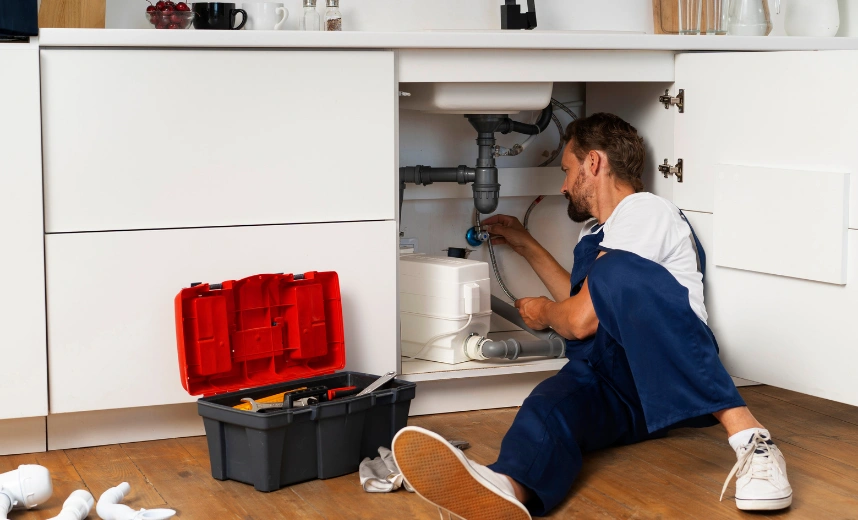

Catch basin installation provides a controlled collection point for stormwater accumulating in yards, driveways, patios, and other low areas. Our contractor network evaluates surface elevations, runoff direction, basin location, and drainage connections to develop catch basin systems suited to Los Angeles properties.
A properly planned catch basin intercepts surface runoff and directs collected water into connected drainage piping. Correct sizing, placement, pipe slope, and discharge planning are essential for improving drainage performance and reducing recurring standing water around the property.
Professional Catch Basin Installation
Effective catch basin drainage begins with understanding how water moves across the site. Contractors represented by Drainage Pro LA assess low points, surrounding grades, runoff volume, existing drainage, and available discharge routes before recommending basin placement.
Depending on property conditions, catch basins can be connected to solid underground drain pipe and incorporated with channel drains, yard drainage, or grading improvements. The objective is to collect concentrated surface water efficiently and route it through a properly planned drainage path.
Surface Water Collection
Strategic basin placement captures runoff at low points before water spreads across the property.
Underground Drain Connection
Solid drain piping carries captured stormwater toward an appropriate planned discharge location.
Where Catch Basins Work Best
Catch basins are particularly useful where rainwater repeatedly concentrates at defined low points. Common applications include poorly draining yards, driveway edges, patios, landscaped areas, walkways, and locations receiving runoff from surrounding hardscape or higher portions of a property.
Successful installation requires the basin and connected piping to work with the property's existing grade. Contractors within our network consider inlet elevation, pipe routing, drainage slope, debris management, and outlet conditions when determining an appropriate catch basin configuration.
Low
Point Drainage
Collects concentrated runoff from low areas where stormwater repeatedly pools after rainfall.
Direct
Runoff Control
Channels captured surface water into piping for controlled drainage away from problem areas.
Catch Basin Installation FAQs
Learn about catch basin placement, underground drain connections, standing water control, maintenance, and other important considerations when planning catch basin drainage for a Los Angeles property.
Catch basins are generally positioned at low points where surface runoff naturally concentrates. Proper placement depends on property grading, water-flow direction, surrounding surfaces, drainage piping, and the available discharge location.
A catch basin can help when standing water is caused by surface runoff collecting at a low point. Proper basin placement, pipe slope, capacity, and a suitable drainage outlet are important for effective performance.
Catch basins commonly connect to solid underground drainage pipe that transports collected stormwater toward an appropriate outlet. The exact connection and discharge method depend on site conditions and local requirements.
The number depends on runoff volume, property elevations, drainage area, and the location of low points. Larger or more complex properties may require multiple basins connected within one drainage system.
Catch basins should be inspected periodically and after significant debris accumulation. Removing leaves, sediment, soil, and other material helps keep the inlet and connected drainage pipe functioning properly.